Insects कीट
Every insects in the atlas with a photograph. 183 species. Cards: tap the photograph to see the name. Quiz: ten photographs, four names each; your best score stays on this phone.
कार्ड: तस्वीर पर टैप करें, नाम दिखेगा। प्रश्नोत्तरी: दस तस्वीरें, हर एक के चार नाम; आपका सबसे अच्छा स्कोर इसी फ़ोन पर रहता है।
The species in this deck इस डेक की प्रजातियाँ
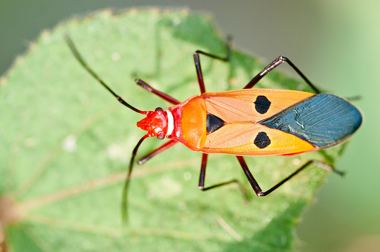

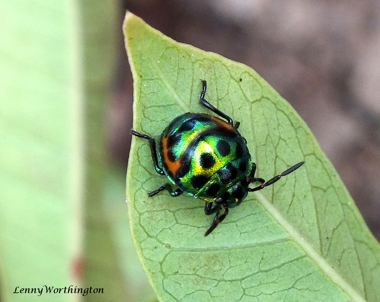
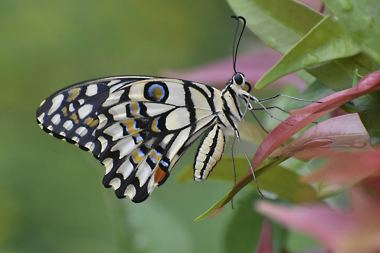

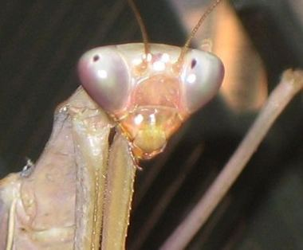
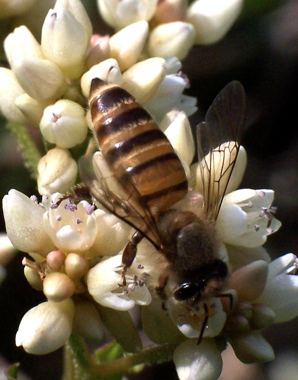
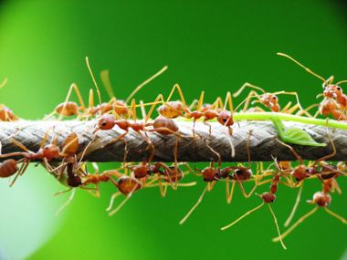


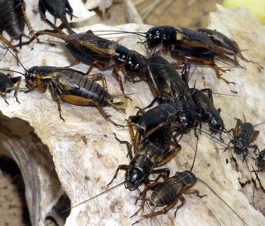
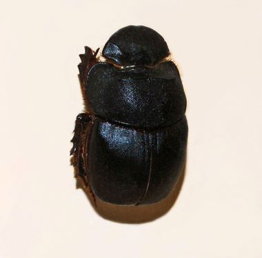

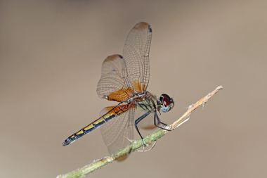
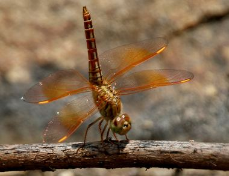
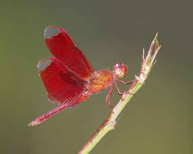
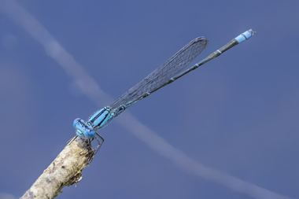
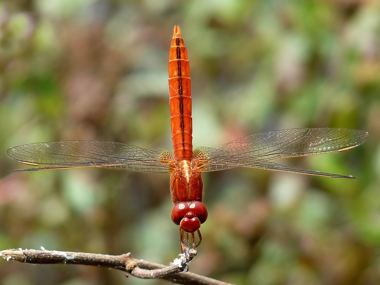

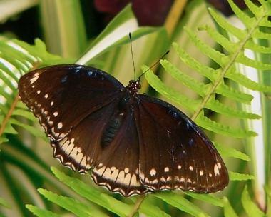
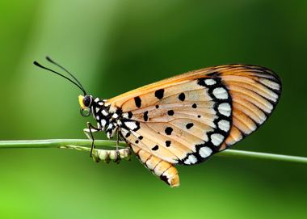
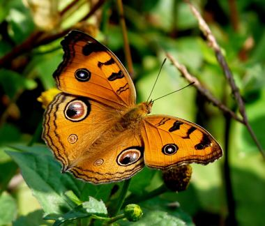
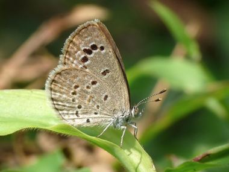
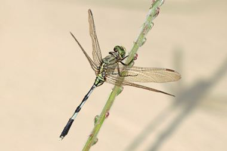

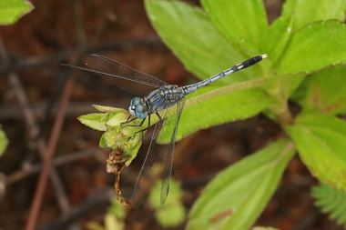
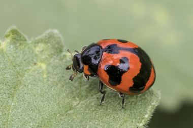
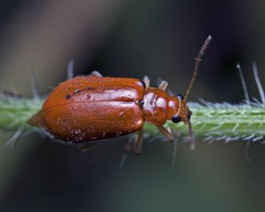
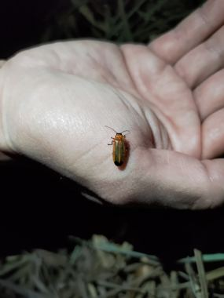
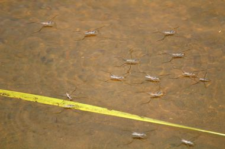

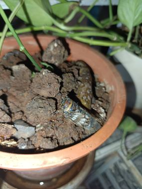
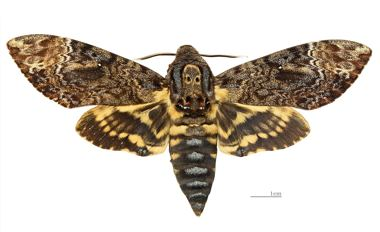
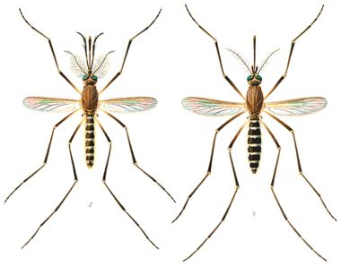
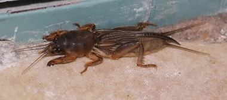
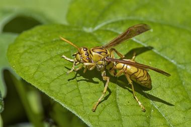
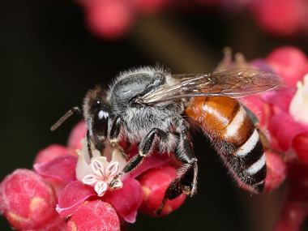
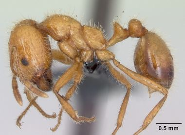
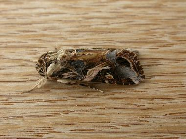

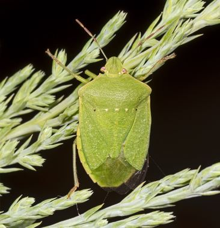

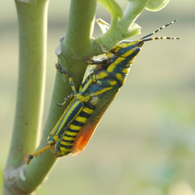
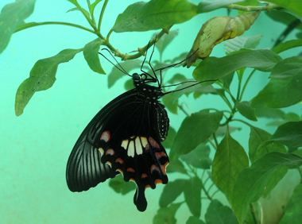
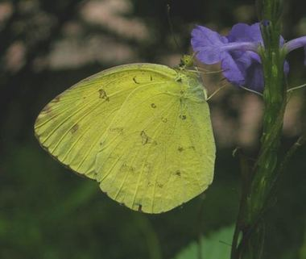
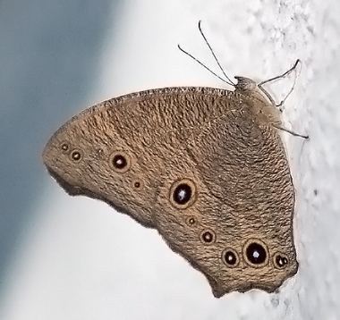
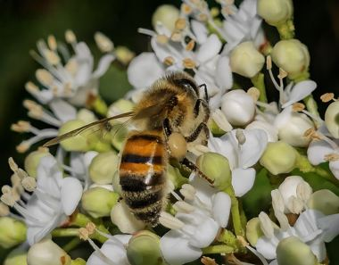
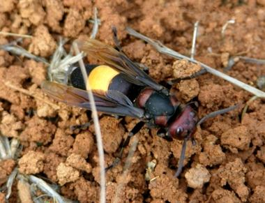


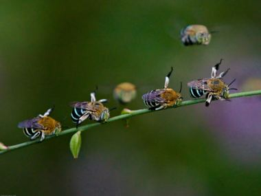


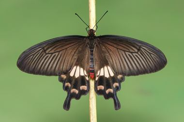
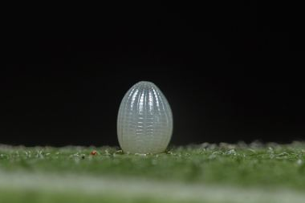
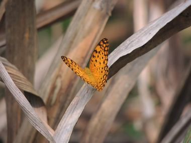
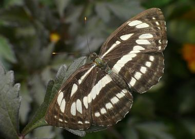
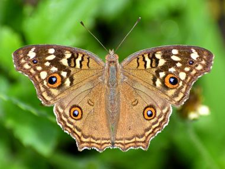
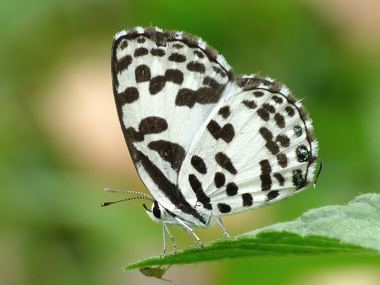
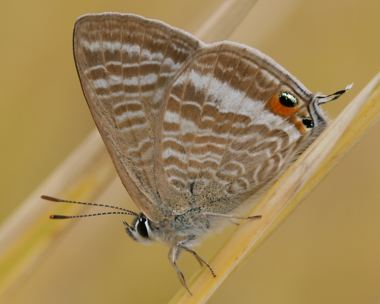

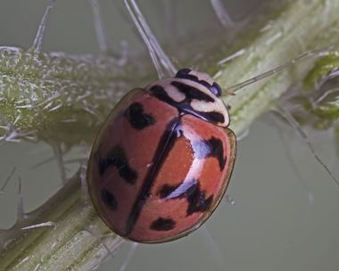
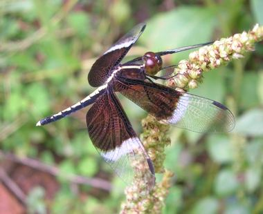


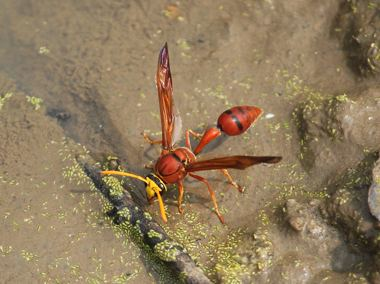

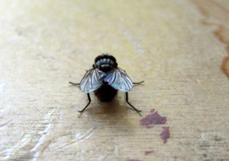